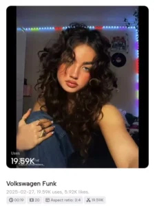

Are you looking for the Volkswagen Funk CapCut Template that’s going viral? You’re in the right place! Instagram and TikTok trends change fast, and this funky, high-energy edit is the latest sensation. Unlike other guides that confuse you with vision codes, we provide direct working CapCut templates so you can create trendy videos effortlessly.
In this article, we’ll share the best Volkswagen Funk CapCut templates, guide you on how to use them, and solve common issues you might face. Let’s get started!
What is the Volkswagen Funk CapCut Template?
The Volkswagen Funk CapCut Template is an energetic and dynamic edit style that’s gaining massive popularity. Here’s why it’s trending:
- Quick cuts & transitions – The video moves at a fast pace, making it engaging.
- Trending sound effects – It uses reverb, bass boosts, and unique audio enhancements.
- Stylish effects & filters – The visuals sync perfectly with the beat.
- High-energy vibe – It’s perfect for today’s fast-paced social media trends.
This trend follows the style of high-energy funk edits, keeping viewers hooked. If you want to go viral, this template is a must-try!
Volkswagen Funk CapCut Template Links (100% Working)

USE THIS TEMPLATE ➜ Click Here
Volkswagen Funk CapCut Template 2025 ➜ Click Here
More Variations of Funk CapCut Templates ➜ Click Here
Common CapCut Issues & Fixes
If you’re facing issues while using the Volkswagen Funk CapCut Template, don’t worry! Here are some quick solutions:
Problem 1: Template Not Opening
Fix: Use a VPN if CapCut templates are restricted in your region. Connect to a different country and try again.
Problem 2: Unable to Export Video
Fix: Make sure you are logged into CapCut before editing. Without signing in, you cannot export your video.
Problem 3: Video Not Syncing Properly
Fix: Use short, high-quality clips that match the template’s style for the best results.
How to Create a Video Using the Volkswagen Funk CapCut Template
Follow these simple steps to create an eye-catching video with the Volkswagen Funk CapCut Template:
- Click the Template Link (given above). It will directly open in CapCut.
- Select Your Video Clips – Choose short, high-energy clips that fit the beat.
- Customize & Edit – Add effects or text as needed.
- Preview & Export – Once happy, export your video and share it on Instagram or TikTok!
Pro Tip: Use trending hashtags like #VolkswagenFunk #CapCutTrend to boost your video’s reach.
Related CapCut Templates You’ll Love
Want more viral CapCut templates? Check these out:
- Money Pull Up CapCut Template – Create stunning edits with this trending template!
- Golden Glow Effect CapCut Template – Get a dreamy golden glow on your videos.
- Symbiote Edit Template CapCut Free – Make your videos look cinematic with the Symbiote effect!
Final Thoughts
The Volkswagen Funk CapCut Template is an amazing way to create high-energy videos that grab attention. With our direct working links, you won’t have to struggle with vision codes or broken templates. Just click, edit, and go viral!
If you face any issues, feel free to ask in the comments. Happy editing!